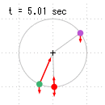
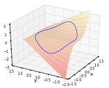
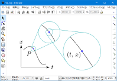
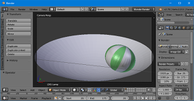
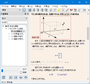
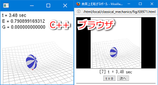
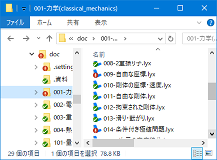

このサイトについて
方針
概念や定義が先にあってそれを説明するという形ではなく、物理的な題材を考えていく中でそれらを見つけていくという形にしたい。最初から完成度の高いものは作れないので、手直しを続けて徐々に完成度を高めていく。手直しの基準は「今の自分から見て欲しいと思えるものになっているか」とする。
リンク
このサイトはフリーソフトウェアを使用して作られているので、感謝の意を込めてそれらを紹介する。


Matplotlibはグラフ描画ツールである。公式サイトのギャラリーは
ここ。Pythonという既存のプログラミング言語を使って処理を記述する形になるので、ファイル入力やデータ加工などの複雑な処理と連携しやすい一方、設計思想が難解である。
このサイトでは、3次元グラフを描画するために使用している。

Inkscapeは2次元イラスト作成ツールである。拡大縮小しても劣化しないベクター形式の画像を扱うためのツールである。このサイトのほぼすべての図で使用している。

Blenderは3次元CGコンテンツ作成ツールである。1枚絵だけでなくアニメーションを出力することもできる。このサイトでは、力学編第13章のシミュレーション動画および3次元の図で使用している。

Lyxは数式を使った文書用のエディタである。PDFで出力するのが標準的な使い方である。このサイトの記事は全てこれを用いて書いている。
Mathjaxはwebブラウザ上で数式を表示させるための標準的なライブラリである。このサイトの本文中の数式は全てこれを用いている。

EmscriptenはC++言語などで書かれたプログラムをwebブラウザ上で実行できる形に変換するためのツールである。右図のように、C++で書かれたシミュレーションが（コードに手を加えることなく）ブラウザ上で実行できる。このサイトでは、ブラウザ上で数値シミュレーションを実行するために用いている。

Gitはバージョン管理システム、即ち、過去のファイルと現在のファイルを比較したり過去の状態に戻したりするツールである。過去の履歴は全てリポジトリと呼ばれるフォルダに格納される。TortoiseGitはGitを扱いやすくするツールであり、右図のように変更されたファイルを視覚的に確認できる。GitHubは上述のリポジトリをインターネット上に設置し管理するためのサービスである。GitHubには作成したリポジトリを自動的にwebページとして公開する機能があり、このサイトはそれを使って公開されている。